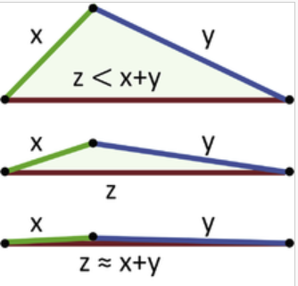

Ders 1
Önce Reel Analiz (Real Analysis) ile başlayalım. Fonksiyonel Analizdeki pek çok kavram Reel Analiz ile benzer (ama daha geneldir).
Reel Çizgi
Reel sayıların olduğu küme $\mathbb{R}$'ye geometrik bir açıdan "reel çizgi" ismi de verilir. Reel çizgi üzerinde uzaklık kavramı, mesela iki nokta $x,y$ arasında
$$ d(x,y) = |x - y| $$
olarak gösterilebilir. Uzaklık fonksiyonu $d$'nin özellikleri şunlardır:
-
$d(x,y) > 0$. Her uzaklık ya sıfır, ya da pozitiftir.
-
$d(x,y) = 0$ eğer $x=y$ ise.
-
$d(x,y) = d(y,x)$
-
$d(x,y) \le d(x,z) + d(z,y)$. Bu eşitsizliğe "üçgen eşitsizliği (triangle inequality) ismi verilir.

Özet olarak söylenmeye çalışılan, $x,y$ arasında üçüncü bir noktaya zıplanarak gidiliyorsa, bu mesafeyi arttırır, ve bu artış en az $x,y$ arasındaki mesafe kadardır. Daha fazla da olabilir.
Diziler (Sequences)
Bir dizi aslında sadece bir listedir. Listede 1. eleman vardır, 2. eleman vardır, vs. ve bu sonsuza kadar devam eder. Bu nokta önemli, matematikte sonlu / sınırlı (finite) bir liste dizi değildir. Dizilerin önemli bir özelliği sonsuza kadar devam etmeleridir.
Daha formel olarak bakarsak doğal sayıların, yani $\mathbb{N}$ kümesinin de tanımda bir rol oynadığını görebiliriz. Listedeki her eleman dizideki sıra numarası ile etiketlenebilir, 1. elemanı "1", 2. elemanı "2", vs. olarak etiketleyebiliriz, o zaman bu açıdan bakarsak bir dizinin, doğal sayılar ile başka bir küme arasındaki bir eşleşme olduğunu da söyleyebiliriz. Bu eşleşme bir diğer tanımla bir fonksiyondur. Yani bir dizi aslında bir fonksiyondur, yani
$$ f: \mathbb{N} \to \mathbb{R} $$
Dizimizi
$$ f(1),f(2),f(3),...,f(n),.. $$
olarak gösterebiliriz.
Yaklaşmak (Convergence)
Açık bir şekilde görüleceği üzere alttaki dizi
$$ 1,\frac{1}{2},\frac{1}{3},\frac{1}{4},... $$
gittikçe 0 değerine doğru gidiyor. Bu dizi "sıfıra yakınsıyor (convergence)" deriz, ya da "dizinin limiti sıfır" deriz. Peki bu fikri nasıl daha açık, net olarak tanımlayabiliriz?
Yaklaşan seriler 18. yüzyılda incelendi ve geliştirildi, fakat o zamanlarda bu tür dizilerin tanımı hiçbir net olarak ortaya koyulmadı. Literatur taranırsa tanıma en yakın olacak şey şöyledir:
"Bir dizi ${s_n}$ $L$ sayısına yaklaşır, eğer bu dizideki terimler gittikçe $L$'e yakınlaşlıyorsa".
Bu tanımın oldukça genel, kabaca olarak yapılmış olması bir yana, bazen bizi yanlış yollara bile sürükleyebilir. Mesela şu diziyi ele alalım
$$ .1, .01, .02, .001, .002, .0001, .0002, .00001, .00002, ... $$
Bu dizi muhakkak sıfıra "yakınlaşıyor", fakat terimler düzenli bir şekilde sıfıra yaklaşmıyorlar. Her ikinci adımda birazcık sapıyorlar. Ya da şu dizi
$$ .1, .11, .111, .1111, .11111, .111111, ... $$
Bu dizi gittikçe .2'ye "yakınlaşıyor", fakat bu dizinin .2'ye yaklaştığı iddia edilemez. Gerçek limit 1.9 olmalı, 2 değil. Ne olduğu belli olmayan bir "gittikçe yaklaşma" tanımına değil, bizim aslında "gelişigüzel yakınlık (arbitrarily close)" tanımına ihtiyacımız var.
Bu fikri en iyi yakalayabilen 1820'li yıllarda Augustin Cauchy oldu. Eşitsizlikleri kullanarak "herhangi / gelişigüzel yakınlık" kavramını formüle eden bir tanım bulmayı başardı. Bu şekilde limit kavramı gayet açık matematiksel eşitliszlikler ile gösterilebildi.
Tanım: Bir Dizinin Limiti
${s_n}$'nin reel sayılardan müteşekkil bir dizi olduğunu düşünelim. ${s_n}$'nin bir reel sayı $L$'e yaklaştığını söyleriz, ve bunu
$$ \lim_{n\to\infty} s_n = L $$
olarak belirtiriz. Ya da
$$ s_n \to L \ olur, \ n \to \infty \ iken $$
eğer her $\epsilon > 0$ için öyle bir tam sayı $N$ var ise, ki bu $N$ şu şartlara uymalı
$$ |s_n - L| < \epsilon $$
$n \ge N$ olduğu her zaman için.
Bir dizi yaklaşmıyorsa, ona uzaklaşan (divergent) dizi adı verilir. Bu her iki tür ile aynı derecede ilgileniyoruz.
Not: Tanımda $N$'nin $\epsilon$'a bağlı olduğu görülüyor, eğer $\epsilon$ çok ufak ise mesela, o zaman $N$'in oldukça büyük olması gerekebilir. Bu açıdan bakılınca aslında $N$'nin $\epsilon$'nun bir fonksiyonu olduğu söylenebilir. Bu durumu tam vurgulamak için bazen $N(\epsilon)$ yazmak daha iyi olabilir.
Not: Tanıma dikkat edersek, şartlara uyan bir $N$ bulununca, o $N$ değerinden daha büyük herhangi bir $N$ de kullanabiliriz. Yani üstteki tanım bize herhangi bir $N$ bulmamızı söyler, illa ki "en küçük" $N$'i bulmamız gerekmez.
Tanım bunu söylemiyor olsa bile ibarenin asıl gücü $N$'nin {\em $\epsilon$ ne kadar küçük olursa olsun bulunabiliyor olmasıdır}. Eğer $\epsilon$ büyük bir sayı ise $N$'i bulmak kolay olur. Eğer $\epsilon = 0.1$ için (ki bu sayı $\epsilon$ türü sayılar için büyük sayılır) işleyen bir $N$ bulursak, aynı $N$ daha büyük $\epsilon$ değerleri için de işleyecektir.
Örnek
Üstteki tanımı kullanarak
$$ \lim_{n \to \infty } \frac{n^2}{2n^2 + 1} = \frac{1}{2} $$
olduğunu ispat edelim. Yanlız şunu belirtelim, üstteki tanım limitin 1/2 olacağını hesaplamak tekniği olarak verilmiyor. İfade limit kavramına kesin bir tanım getiriyor ama o limiti hesaplamak için kesin bir metot sunmuyor. Neyse ki çoğumuz bu hesabı yapmak için yeterince Calculus hatırlıyoruz, böylece limitin doğruluğunu ispatlamadan önce ne olduğunu bulabiliriz.
$$ \lim_{n \to \infty } \frac{n^2}{2n^2 + 1} = \lim_{n \to \infty } \frac{1}{2 + 1/n^2} = \frac{1}{\lim_{n \to \infty }(2 + 1/n^2)} $$
$$ = \frac{1}{2 + \lim_{n \to \infty }(1/n^2)} = \frac{1}{2} $$
Bu hesap, eğer tüm adımların doğruluğu ispatlanırsa, limitin ne olduğunun da ispatı olabilirdi. Adımların doğruluğunu daha sonra göstereceğiz, böylece her seferinde $\epsilon,N$ temelli argümanları kullanmamıza gerek kalmayacak. Şimdi $\epsilon,N$ bazlı ispata gelelim,
Pozitif bir $\epsilon$'un verildiğini varsayalım. Öyle bir $N$ (ya da $N(\epsilon)$, hangisini tercih ederseniz) bulmamız gerekiyor ki, dizide $N$. terimden sonraki her eleman 1/2'ye $\epsilon$'dan daha yakın olsun, ve şu ifade doğru olsun
$$ \bigg|\frac{n^2}{2n^2+1} - \frac{1}{2}\bigg| < \epsilon $$
ki $n=N,n=N+1,n=N+1,N+2,...$. Sonuçtan geriye doğru gidersek işimiz kolaylaşır, yani verilen $N$ için $\epsilon$'nun ne kadar büyük olması gerektiğini hesaplarsak. Üstteki mutlak değer (absolute değer) işaretinin içine bakalım,
$$ \frac{n^2}{2n^2+1} - \frac{1}{2} = \frac{2n^2}{2(2n^2+1)} - \frac{2n^2+1}{2(2n^2+1)} $$
$$
= \frac{2n^2 - 2n^2 - 1}{2(2n^2+1)} =
= \frac{- 1}{2(2n^2+1)}
$$
Tam değer alınınca
$$ \frac{1}{2(2n^2+1)} < \epsilon$$
olmalı, ya da
$$ 4n^2 + 2 > \frac{1}{\epsilon} $$
Dikkat, tersine çevirince küçüklük işareti büyüklük oldu.
Bu ifadeye uyan en küçük $n$, aradığımız $N$. O zaman
$$ N^2 > \frac{1}{4}\bigg(\frac{1}{\epsilon} - 2\bigg) $$
ifadesine uyan her tam sayı $N$ bizim için uygun. İlla ki en küçük $N$ olması gerekmez, en rahat olan $N$ biraz büyükçe olabilir, mesela eğer sağ taraftaki $1/4\epsilon$ terimine (sağ tarafta daha fazlası var, ama eksi işareti bu terimi daha küçültecek nasıl olsa) eşit bir şeyleri sol tarafta istiyorsak, onun karesini $N$ olarak kabul ederiz,
$$ N > \frac{1}{2\sqrt{\epsilon}} $$
deriz.
Bu örneğin bize verdiği asıl ders, aslında, tanımın bize limit teorisini geliştirmek için teorik / kesin (rigourous) bir yöntem sunması ama bu limitlerin hesabını yapmak için pratik bir yöntem olmaması. Bir limitin doğruluğunu hesaplamak için nadiren böyle bir yönteme başvurulur.
Alt Dizinler (Subsequences)
$$ 1, -1, 2, -2, 3, -3, 4, -4, 5, -5, . . . $$
şeklindeki bir dizinin içinde iki tane daha dizin olduğu görülebilir. Bunlardan biri
$$ 1, 2, 3, 4, 5, ... $$
Diğeri
$$ -1, -2, -3, -4, -5, ... $$
Bu dizin içinde dizin kavramını temsil etmek için "altdizin" kelimesini kullanacağız. Çoğunlukla bir dizini incelemenin en iyi yolu onun altdızinlerine bakmaktır. Ama altdizinlerin daha derli toplu bir tanımı ne olabilir acaba? Üstte kabaca yaptığımız kavramın formel matematiksel bir tanımına ihtiyacımız var.
Tanım
$$ s_1, s_2,s_3,s_4,...$$
gibi herhangi bir dizini ele alalım. Altdizin ile
$$ s_{n_1},s_{n_2},s_{n_3},s_{n_4},... $$
demek istiyoruz ki
$$ n_1 < n_2 < n_3 < ... $$
olmalı, altdizinde kullanılan indekslerin her biri, bir öncekinden büyük olmalı.
$$ 1, 2, 3, 4, 5, ... $$
dizini,
$$ 1, -1, 2, -2, 3, -3, 4, -4, 5, -5, . . . $$
dizinin altdizini çünkü orijinal dizinden çekip çıkartılan elemanların indekleri $n_1=1,n_2 = 3,n_3 = 5$ şeklinde.
Tekdüze (Monotonic) Altdizin Varlığı Teorisi
Tekdüzelik bir dizinin ya hep artması, ya da hep azalmasıdır. Bir artan, sonra azalan bir dizin mesela tekdüze olmaz. Teori şu: Her dizin içinde bir tekdüze altdızın vardır. Bu teoriyi ispatlamayacağız.
Bolzano-Weierstrass Teorisi
Her sınırlı (bounded) dizi içinde yakınsayan (convergent) bir altdizi vardır.
İspat
Üstteki Tekdüze Altdizin Varlığı Teorisine göre her dizin içinde tekdüze bir altdizin vardır. Sınırlı bir dizin içinde bu tekdüze altdizin tabii ki sınırlı olacaktır, yani bir değere yaklaşacaktır. İspat tamamlandı.
Limitlerin Sınırlı Olmaları Özelliği
Eğer bir dizi belli değerler arasındaki değerleri içeren bir küme ise, yani sınırlı bir küme ise (bounded set), bu diziye sınırlı bir dizi denir (bounded sequence). Yani dizi ${s_n}$ sınırlıdır, eğer $M$ diye bir sayı var ise, ki dizideki her dizi için
$$ |s_n| \le M $$
Teori
Her yakınsak (convergent) dizi sınırlıdır. Bu teorinin ispatını vermeyeceğiz, fakat sınırlı olmayan bir dizinin limiti olamayacağı açıktır.
Cauchy Kriteri
Bir dizinin hangi özelliği onun yakınsaklığını karakterize eder? "Karakterize eder" kelimeleriyle gerekli ve yeterli (necessary and sufficient) bir durum arıyoruz ki bu durum gerçekleştiğinde dizinin yakınlaştığını bilelim.
Her türlü diziye uygulanabilen böyle bir karakterizasyon Cauchy tarafından keşfedildi. Cauchy'nin bulduğu tanımın ilginç bir tarafı var, hiçbir nihai limit değerine referans yapmıyor. Sadece, son derece gevşek bir şekilde, bir dizinin terimleri birbiriyle rasgele (arbitrary) bağlamda, eninde sonunda (eventually) yaklaşırsa, o dizinin yakınsayacağını söylüyor. Kriter söyle:
Bir dizi ${s_n}$ yakınsaktır, eğer, ve sadece eğer her $\epsilon > 0$ için bir tamsayı $N$ var ise, ki
$$ |s_n - s_m| < \epsilon $$
$n \ge N, m \ge M$ olmak kosuluyla.
İspat
Teorinin bu öğesi o kadar önemli ki kendine has yeni bir terminolojiyi hak ediyor. Üstteki öğeye uyan her diziye Cauchy dizisi adı veriliyor. Yani teori "bir dizi sadece ve sadece Cauchy dizisi ise yakınsaktır" diyor. Bu terminoloji daha ileri matematikte (mesela temel alınan küme reel sayılar değil, daha çetrefil uzaylar olduğu zaman) geçerli olmayabilecektir, ama bu durumda da gerektirdiği ek şartlar, ve ortaya koyduğu ifadenin kesinliği çok önemlidir.
İspat biraz uzun, ve Bolzano-Weierstrass teorisini gerektirecek. Bir yöndeki ispat oldukça kolay. Farz edelim ki ${s_n}$ bir $L$ sayısına yaklaşıyor. Diyelim ki $\epsilon > 0$. O zaman bir tam sayı $N$ olmalı ki
$$ |s_k - L| < \frac{\epsilon}{2} $$
ki $k \ge N$. Eğer hem $m$ hem $n$ $N$'den büyüklerse,
$$ |s_n - s_m| \le |s_n - L| + |L - s_m| < \frac{\epsilon}{2} + \frac{\epsilon}{2} < \epsilon $$
Üstteki ilk eşitsizlik / açılım üçgen eşitsizliğinden ortaya çıkıyor. Bu eşitsizlikten ortaya çıkan iki yeni terimin hangi değerlere sahip olduğunu biliyoruz, yerlerine koyunca $\epsilon$ elde ediyoruz.
Cauchy dizilerinin üstteki ispatı aslında çok akıllıca; herhangi bir limit aranmıyor sadece dizi, başka bir indis uzerinden, kendisi ile karşılaştırılıyor. Yani bir limite yakınsak olup olmadığımızı değil, dizinin kendisine olan yakınsaklığını göstermeye uğraşıyoruz.
Şimdi daha zor olan ikinci bölüme gelelim. Bu bölümün ispatı için, üç tane alt bölüm lazım.
Önce her Cauchy dizisinin sınırlı olduğunu iddia ediyoruz. İspat için üstteki sınırlı diziler hakkındaki teoriye başvururuz, her yakınsak dizi sınırlıdır, her Cauchy dizisi bir değere yaklaştığına göre, o zaman her Cauchy dizisi sınırlıdır.
İkinci alt bölüm için yakınsak (sınırlı) ${s_n}$ dizisine Bolzano-Weierstrass teorisi uygulayarak yakınsak bir alt dizin ${s_{n_k}}$ elde ediyoruz.
Üçüncü alt bölüm Cauchy dizilerinin doğal bir sonucu aslında. Eğer $s_{n_k} \to L$ olduğunu biliyorsak, ve ${s_n}$'nin Cauchy olduğunu biliyorsak, o zaman $s_n \to L$ olduğunu gösterebiliriz. $\epsilon > 0$ olsun, ve $N$'i öyle seçelim ki, tüm $n,m \ge N$ için
$$ |s_n - s_m| < \epsilon/2 $$
Sonra $K$'yi öyle seçelim ki, her $k \ge K$ için
$$ |s_{n_k} - L| < \epsilon/2 $$
olsun. Diyelim ki $n \ge N$. Şimdi $m$'i $n_k$'nin $N$'den büyük olan herhangi bir değerine eşitleyelim ki $k \ge K$ olsun. Bu değer için $s_m = s_{n_k}$'dir.
$$ |s_n - L| \ge |s_n - s_{n_k}| + |s_{n_k} - s_n| < \epsilon/2 + \epsilon/2 = \epsilon $$
Birinci eşitsizlik, üçgen eşitsizliğinden geliyor. Daha sonra elde edilen terimlerin bildiğimiz değerlerini yerine koyuyoruz, $s_n \to L$ olduğunu görüyoruz (üstteki formülün başı ve sonunu birleştirirsek, elde ettiğimiz sonuç). İspat tamamlandı.
Yukarı